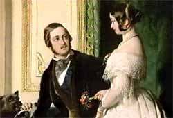
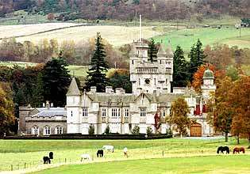

The Queen's Welcome to Scotland
Balmoralism

Broadside Ballad by Andrew Park
Tune("The Campbells are coming" as suggested by Malcolm Douglas - http://www.mudcat.org )
Sequenced by Christian Souchon
( "Broadside" probably published in 1842- NLS shelfmark: ABS.10.203.01(128)

|
1.The Queen she is coming, hurra! hurra!
To the land of the thistle,hurra! hurra! From mountain and glen Come ye brave Highlandmen, And welcome your Queen ane an' a', an' a'. She has left her gay halls Where the Thames brightly falls 'Mid structures of fame to the sea, the sea, Where commerce and arts, With the noblest of hearts, Sway the home of the brave and the free, the free. 2.She comes to the heath and the hills, the hills, To the region of high-gushing rills, the rills, Where Nature's rude throne Is more grand then her own And loyalty every heart fills, heart fills! EDINA shall smile ( =Edinburgh ) Without effort or guile The Athens of Britain so grand, so grand, While Holyrood gay Shall be first in display, To welcome the Queen of our land, our land. 3.Bucleugh and Breadalbane, wi' joy, wi' joy, Shall summon their clans, man an' boy, an' boy. The Pibroch shall sound And the hills echo round, As they march out, their Queen to convoy, to convoy, Though Scotia be cold. Yet her sons are bold; She has wisdom and warm heart's an' a', an' a' Wherever man strays There are songs to her praise, Heard sung on sweet plains far awa', awa'! 4.Then on wi' the tartan sae braw, sae braw, The skian-dubh, sporan, an' a', an' a', Your bonnet and plaid, And bright dirk by your side, And fast frae the hills come awa', awa'. Each ancient claymore, Which your fathers of yore Were proud of, come on wi' them a', them a'; Your kilt and your hose, Such as seen by your foes, When Wallace and Bruce laid them low, them low. 5.The Queen to our country is true, is true; She's young and she's lovely to view, to view! And virtue, we find, Is the charm of her mind, While her bounty is every day new, is new. I've seen her blue eyes, As she gazed on the skies, With rapture and beauty to roll, to roll; So the hills of the North, From the Tay to the Forth, Will add a new charm to her soul, her soul! 6.No base-hearted traitor is here, is here;- No one to afflict thee, with fear, with fear; The feeling that reigns O'er our mountains and plains, Is thy love to preserve, which is dear, is dear! Then, long live the Queen, Be she loved as she's been; Here's to Albert, their offspring an' a', an' a', From mountain and glen Come ye brave Highlandmen! The Queen she is coming, hurra! hurra! |
1.La Reine vient, hourra! hourra!
Au pays du chardon, hourra! hourra! Des monts et des vallées Accourez, braves Highlandmen, Et souhaitez la bienvenue à votre Reine, tous, tant que vous êtes. Elle a quitté son aimable palais Qui mire dans la claire Tamise Ses glorieuses structures, pour prendre la mer, Elle qui commande au commerce et aux arts, Avec un coeur empreint de la plus grande noblesse, Préside aux destinées du pays des hommes braves et libres. 2.Elle est en route pour nos landes et nos collines, Pour le pays des ruisselets et des cascades, Où le trône fruste de la Nature Est plus grand encore que le sien; Où la loyauté emplit les coeurs! EDINA ( =Edinburgh ) lui sourira Sans effort ni arrière-pensée! L'Athènes du Nord, si grande, Et le joyeux chateau d'Holyrood Seront les premiers à déployer leurs fastes, Pour accueillir la Reine de notre pays. 3.Bucleugh et Breadalbane, dans l'allégresse, Convoqueront leurs clans, jeunes et vieux. Le Pibroch fera résonner Les échos des collines à la ronde, Lorsque leur cortège sortira pour faire escorte à leur Reine. Si l'Ecosse est réputée froide. Ses fils ne manquent point d'ardeur; Elle est la sagesse-même, mais elle sait réchauffer les coeurs Partout où l'on aille On entend des chants à sa gloire, Dont les accents emplissent nos douces plaines! 4.Or donc, revêtez vos tartans si beaux, Sgian-dubh (poignard fixé à la jambe droite), sporran (bourse ventrale) et tout le reste, Vos bonnets, vos plaids, Et vos dirks (poignards) à vos côtés, Et descendez vite des collines. Sans oublier l'antique claymore,(large épée) Dont vos pères jadis Etaient si fiers; Ni vos kilts et vos bas, Qui semèrent l'effroi chez l'ennemi, Quand Wallace et Bruce les terrassèrent. 5.la Reine envers votre pays est loyale; Elle est jeune et elle est charmante! Mais son courage et sa droiture, nous le savons, Sont l'ornement de son âme, Et sa bonté une source intarissable. J'ai vu ses yeux bleus, Scruter nos cieux, Emus de voir tant de beauté; Si bien que les collines du Nord, Depuis la Tay jusqu'au Forth, Ajouteront un charme nouveau à son âme! 6.Ici point de vile traitrise;- Et nul ne songe à Te faire peur ; Le sentiment qui nous anime Dans nos montagnes et nos plaines, C'est la volonté de conserver Ton affection! Longue vie à notre Reine, Qu'elle soit chérie comme toujours elle le fut; Vive Albert, vivent leurs enfants! Des montagnes et des vallées Accourez, braves Highlandmen! La Reine vient, hourra! hourra! |
|
This broadside ballad refers to a visit to Scotland by Queen Victoria (1819-1901) who, after her first visit with her husband, Prince Albert, in 1842, returned there annually. In 1852 the couple bought land in Balmoral, Deeside, and had the famous "medieval" castle built. Queen Victoria's fondness for tartan greatly helped the clothing industry.
This ballad unfolds a touring advertisement leaflet about the natural beauty and glorious history of Scotland, invites the Highlanders to display the garments and weapons worn by their ancestors at Culloden to please the royal couple and serenely affirms that 'The Queen to our country is true'. The tune is the gathering song of the Anti-Jacobite Clan Campbell: "The Campbells are coming oho, oho!" (but drawing any conclusion from this circumstance woud be hazardous) Source: National library of Scotland |
Cette ballade imprimée en feuille volante (broadside)a trait à une visite en Ecosse de la Reine Victoria (1819-1901) qui, après un premier voyage avec son époux, le Prince Albert en 1842, y revint chaque année. En 1852 le couple acheta du terrain à Balmoral, Deeside et y fit construire le fameux chateau "moyenageux". Le goût de la Reine Victoria pour le tartan fut un élément considérable dans l'essor de l'industrie textile.
La ballade ouvre devant nous un dépliant touristique vantant les beautés naturelles et l'histoire glorieuse de l'Ecosse, invite les Highlanders à faire étalage des vêtements et des armes portés par leurs ancêtres à Culloden pour contenter le couple royal et affirme serènement qu' "envers notre pays la Reine est loyale". La mélodie est le chant de rassemblement de l'anti-jacobite Clan Campbell: "Ce sont les Campbell qui s'avancent!" (sans qu'il soit possible d'en tirer aucune conclusion) Source: National library of Scotland |
